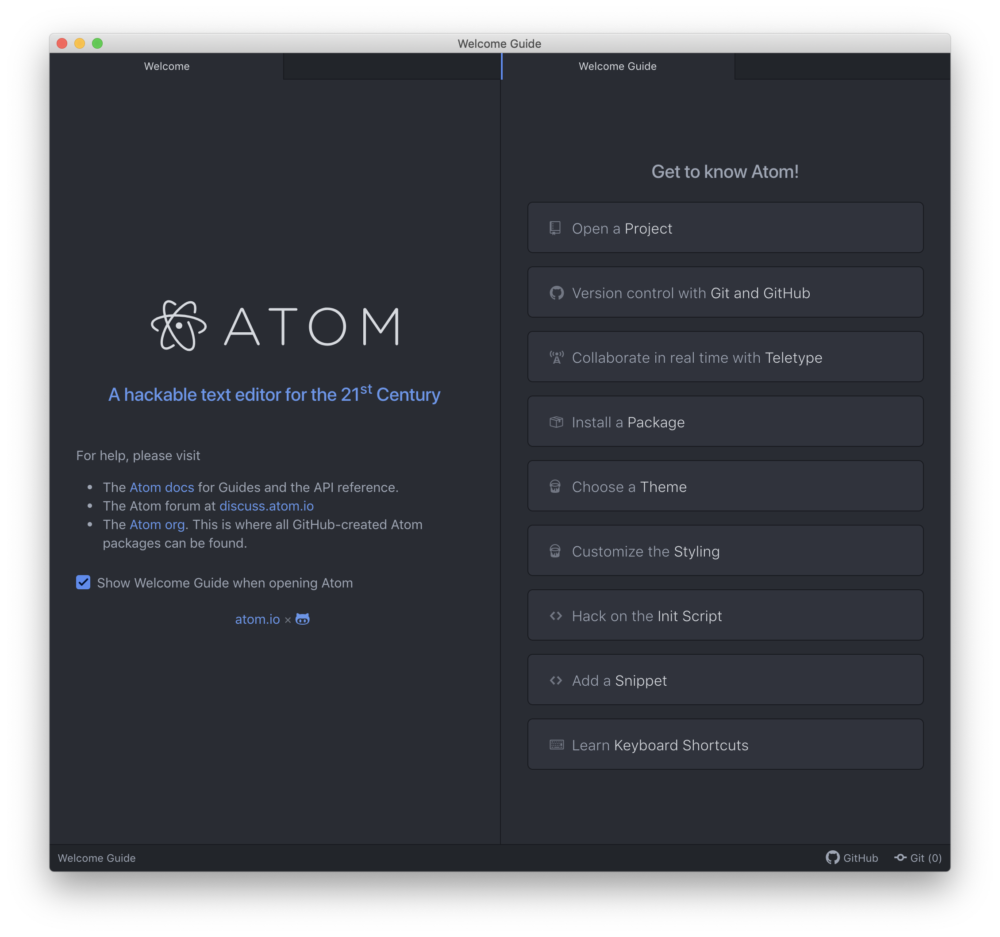
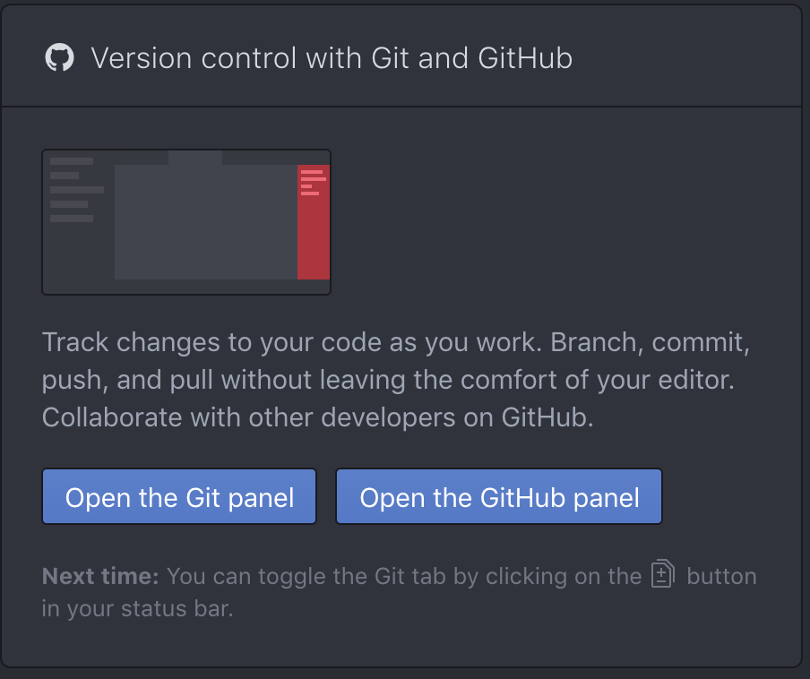
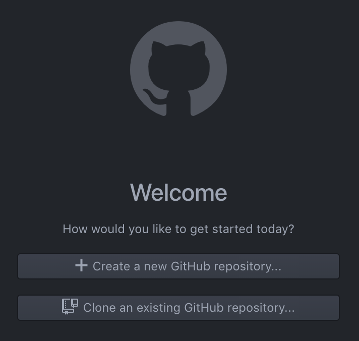
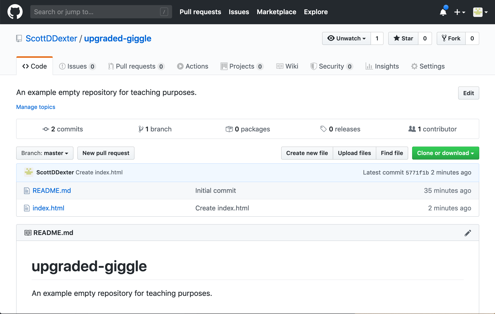
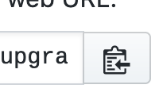
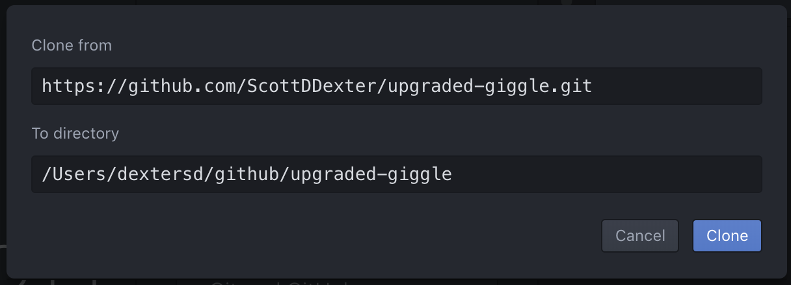
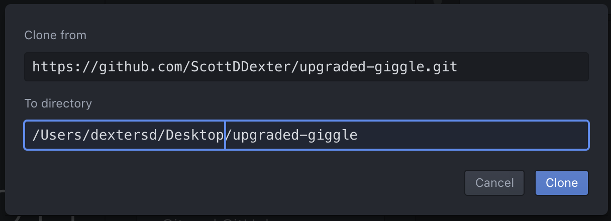
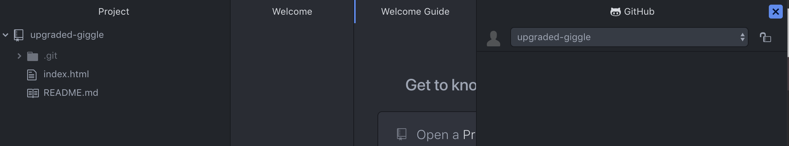
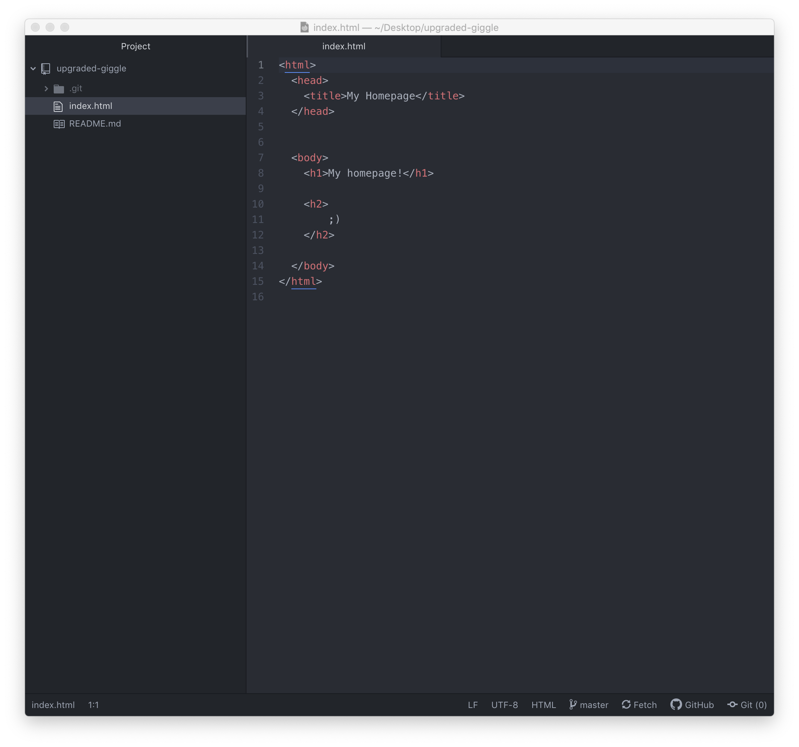

Connecting Atom and GitHub
Here's what to do. When you first run Atom, you should a screen very similar to this:
Click on the "Version control with Git and GitHub" thingie, and it will open up into a panel that looks like this:
Click "Open the GitHub panel," and another panel will open, with the center like this:
OK. Now is where we connect with GitHub. Your GitHub Pages screen should look something like this (except the name will be more like billybob.github.io instead of upgraded-giggle).
Click the green "Clone or download" button, and in the little popup, click the clipboard-arrow icon over on the right--this one:
It probably won't seem like anything happens, but the address of your repository has been copied. Now, go back to Atom, and click the "Clone an existing repository" button. A popup will appear, with a "Clone from" field and a "To directory." Hit paste (Ctrl-V or Command-V, or right-click), and you should see something like this:
It's a good idea to try to understand where the "To directory" is--it's going to create a folder on your computer with the name of your repository. If you know where you want that to be, change that box. If you're not sure, make a note of what's in that box, and continue. I'm going to put mine on my "desktop," so it looks like
Then click that "Clone" button. After a few seconds, you may see a new folder appear (if you're looking for it), and you'll also see a new "Project" column over on the left. You'll also see a "Log in to GitHub" message; ignore that for now (we'll come back to it in class).
Close all the panels except "Project." (If you mouse over the title bar, a little closing-x will appear, like this)
Once you have just the Project panel open, double click on "index.html," and you should see the contents of the file that you created earlier on the GitHub webpage, something like this:
And that's it! (For now) -- we'll talk a little more about what this all means in class.